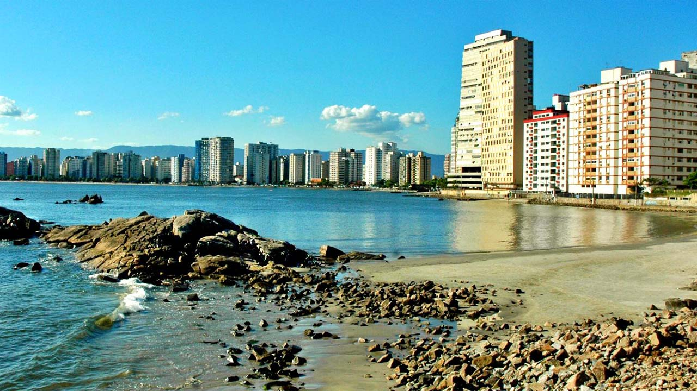
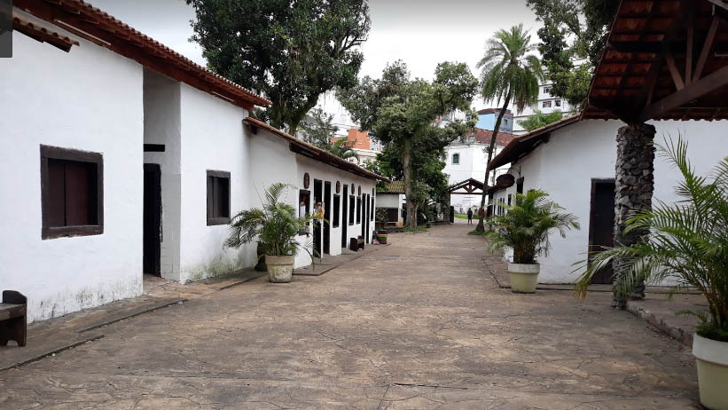

Surgida no ano de 1532, foi a primeira vila da América Portuguesa, fundada por Martim Afonso de Sousa conforme ordens do rei de Portugal, dom João III, em uma ilha descoberta na expedição de Gaspar de Lemos, em 1502, que a batizou em homenagem a São Vicente Mártir.A pequena povoação se organizou e começou a ser reconhecida na Europa como eficiente ponto de parada para reabastecimento e tráfico de escravos índios. Tanto isso é verdade que o porto que aqui existia já constava em um mapa feito em 1501 e trazido por Américo Vespúcio na expedição de Gaspar de Lemos, que aqui chegou em 22 de janeiro de 1502 e batizou o local como São Vicente, em homenagem a São Vicente Mártir.
Têm essa denominação, devido aos prédios local serem considerados de alta classe, pela Prefeitura, Milionários, é uma faixa de areia branca bem estreita e pedras, é a primeira voltada à Baía de São Vicente.Bordeada por arranha-céus, essa praia apresenta problemas ambientais com a diminuição progressiva da sua faixa de areia devido à elevação do nível do mar, esse fato foi comprovado em relatórios ambiental da Prefeitura.
O Mirante da Ilha Porchat, ou “Memorial dos 500 anos”, é uma construção datada de 2002 e projetada pelo grande arquiteto santista Oscar Niemeyer (1907-2012), como uma comemoração ao quinto centenário da descoberta do Brasil. Tratando-se de seu único monumento na Baixada Santista.O local, situado a 76 metros do nível do mar no topo da Ilha Porchat, foi escolhido para receber o monumento de Niemeyer por conta de sua bela vista das praias de Santos e São Vicente.
A Ponte Pênsil de São Vicente é uma ponte pênsil que liga a ilha ao continente, situada no município paulista de São Vicente. Foi uma das primeiras pontes suspensas do Brasil e transporta veículos e pedestres entre Morro dos Barbosas e Japuí.Originalmente concebida em 1910 como uma maneira de transportar o esgoto da cidade de Santos e São Vicente, a construção começou em 1911 e a ponte foi inaugurada em maio de 1914. Foi restaurada em 2015, com os cabos corroídos substituídos juntamente com outros trabalho de reparação.
| Nome do prefeito | Ano eleito | Partido | |
|---|---|---|---|
| Kayo Amado | 1º de janeiro de 2021 | PODE | Atual |
| Pedro Luís de Freitas Gouvêa Júnior | 1º de janeiro de 2017 | - | |
| Luis Claudio Bili | 1º de janeiro de 2013 | - | |
| Tércio Garcia | 1º de janeiro de 2009 | - |
| Dados tecnicos baseados em 6 pontos , sendo eles Populaçao, trabalho e rendimento, educação, economia, saúde, território e ambiente | ||
|---|---|---|
| POPULAÇÃO | População estimada [2021] | 370.839 pessoas |
| TRABALHO E RENDIMENTO | Salário médio mensal dos trabalhadores formais | 2,4 salários mínimos |
| EDUCAÇÃO | Matrículas no ensino fundamental | 42.109matrículas |
| ECONOMIA | PIB per capita | R$ 15.164,69 |
| SAÚDE | Mortalidade Infantil | 14,66 óbitos por mil nascidos vivos |
| TERRITÓRIO E AMBIENTE | Área da unidade territorial | 148,151 km² |
Todos os dados usados na tabela sao fornecidos pelo IBGE : Site do IBGE